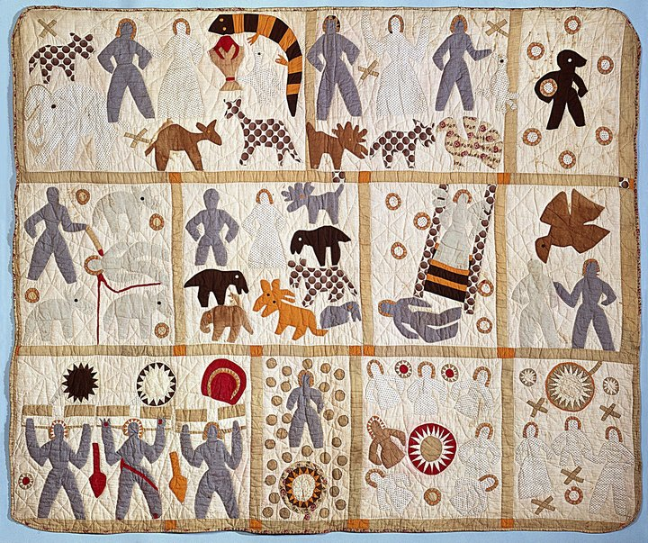
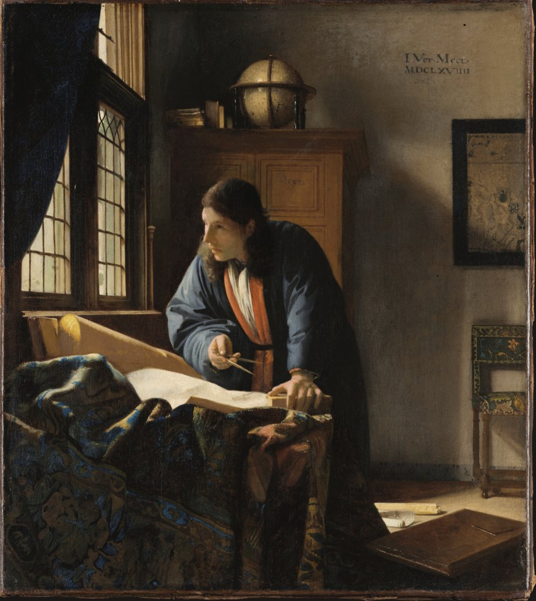
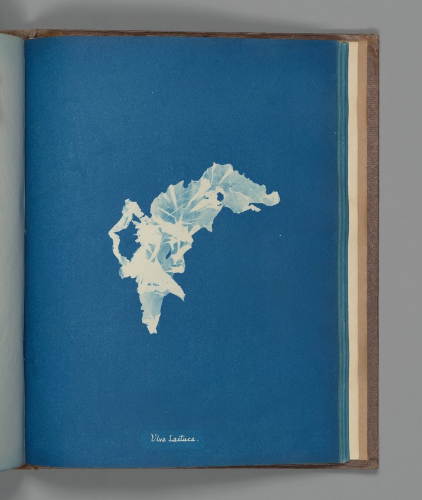
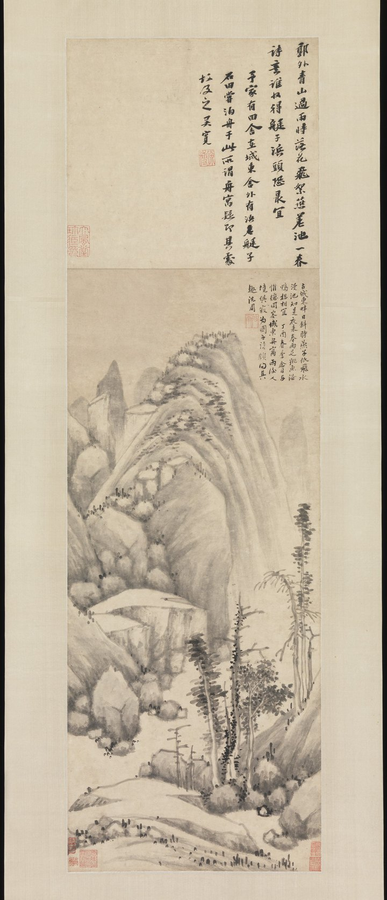
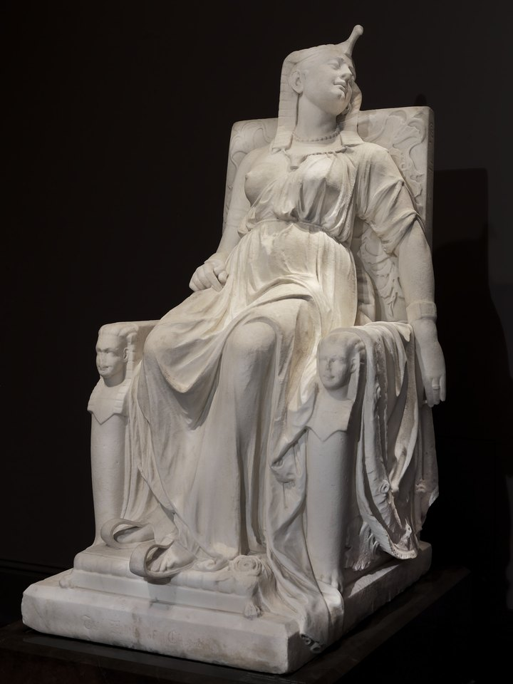

Please Start From Here · Unpublished collection preview
Works
Five works selected for this preview, not a ranking or representative survey. Each opens onto its own page and museum record.

Harriet Powers
Bible Quilt
1885–1886 · Quilt / textile

Johannes Vermeer
The Geographer
1669 · Oil on canvas

Anna Atkins
Ulva lactuca
ca. 1853 · Cyanotype

Shen Zhou
Anchorage on a rainy night
dated 1477 · Hanging scroll; ink on paper

Edmonia Lewis
The Death of Cleopatra
carved 1876 · Marble